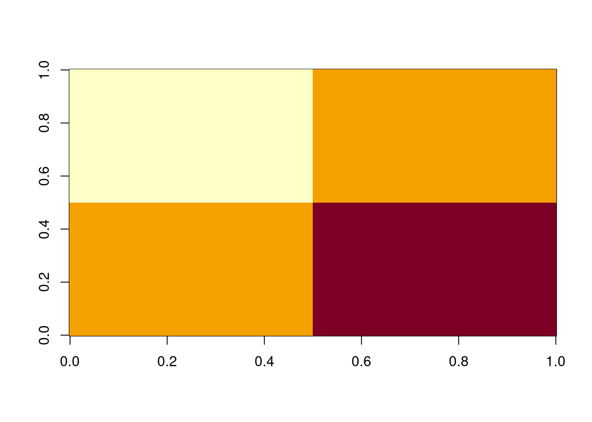
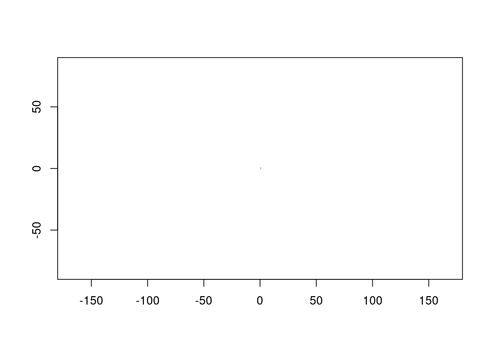
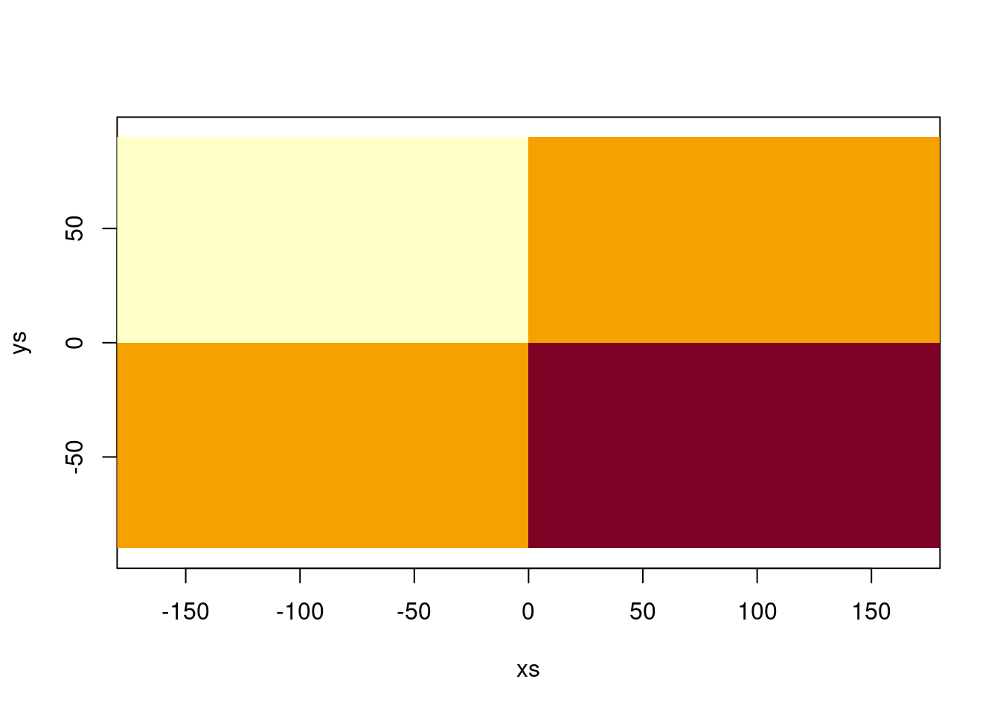
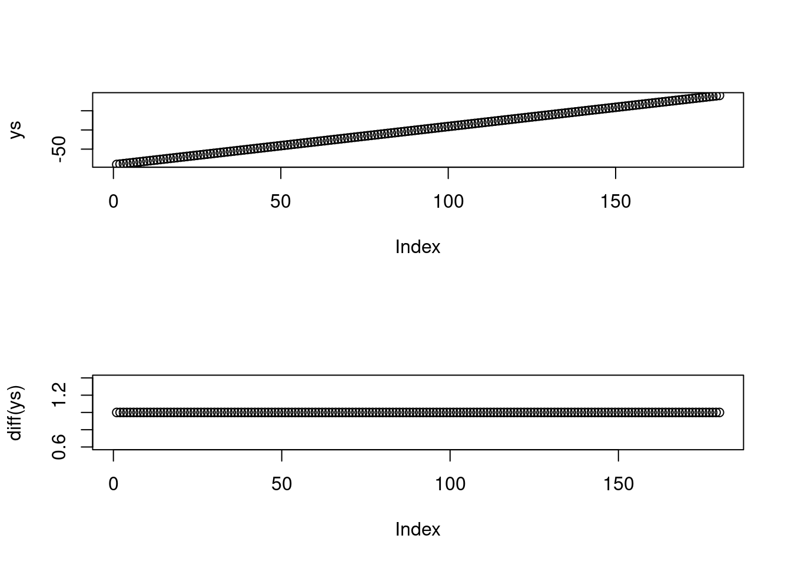

There are a lot of problems when it comes to array representation in data formats and software. There is a whole family of complex issues with sometimes subtle or even cryptic causes, and here we focus on one particular detail.
Degenerate Rectilinear Coordinates
I have taken to saying this phrase to describe a particular situation in array handling. I get confused responses, or normally just no response or feedback on the term itself. I think it’s extremely important though. Python communities raced up to where R was a few years back and just sped on by without any nod to what R folks had learned, I think that’s a huge failure and I take it personally.
Here’s what it is. Let’s say we have a pretty low resolution grid of the world, we break up the entire range of longitude and latitude into intervals, 360 for meridians and 180 for parallels.
(This is neat because in whole number terms, this is exactly the right number).
So, define a grid, we make it a farily typical 1-degree-per-pixel grid of the entire globe flattened unceremoniously from an
angular coordinate system “longitude and latitude” to one where we just plot those numbers in x,y on a flat plane.
## define a grid in -180,180 -90,90 (360x180)dm <-c(360, 180)xlim <-c(-180, 180)ylim <-c(-90, 90)## create a griddat <-matrix(c(0, 1, -1, 0), 2L, 2L)[rep(1:2, each =180), rep(1:2, each =90)]## we don't get much from this because 0,1 0,1## and the world isn't 0,360 0,180 anyway (that would have been handy!)#image(dat)xs <-seq(xlim[1], xlim[2], length.out = dm[1] +1)ys <-seq(ylim[1], ylim[2], length.out = dm[2] +1)image(xs, ys, dat, asp =1)maps::map(add =TRUE)
What happened there? Well, dat is a matrix, a 2D array in R. It has 360 rows and 180 columns (but yes, we are treating the world map as if it had 360 columns, 180 rows - but that is not this blogpost). Just don’t question it right now, but be assured we are treating the world as having 360 unique whole number longitudes, and 180 unique whole number latitudes.
We can image() that, by which I mean draw a pixel map on the screen of all the values in the matrix as if they were a field of little rectangles.
image(dat)

But, that’s very boring because we don’t have any idea where anything is in 0,1 0,1 space.
What if we use xlim and ylim, these are plot() arguments in R (and exist in image() too).
image(dat, xlim = xlim, ylim = ylim)

Ok that was a trick, our matrix is drawn as a tiny dot right at 0,0, because xlim/ylim is about the plot not the data.
No more tricks, image() has 3 arguments x,y,z for normal usage.
image(x = xs, y = ys, z = dat, asp =1)

Why does that work? We essentially have an x coordinate and a y coordinate for every pixel edge. We have one for the left side of the leftmost pixel column, and the second one is the right side of the left most pixel, and so on. We used dm[1] + 1 and dm[2] + 1 up there exactly because we wanted xlim and ylim to be the very extremes of the data.
Cool, explained - a matrix has a coordinate array for each side, we plot it like a map with those. Done.
We are so so so not done.
I’m not here to explain how image() works in R, but that’s kind of necessary because I want people who don’t use R to also read this.
What is Rectilinear?
Rectilinear means varying in one dimension. When applied to axis coordinates it just means you have a position along the axis for each step. These can vary in how big each step is, and that is exactly when we say it’s rectilinear, because otherwise it’s regular.
Our ys above are a regular list of coordinates, each one is exactly the same distance apart (distance in the frame we are using, forget about the actual Earth).
op <-par(mfrow =c(2, 1))plot(ys)range(diff(ys))
[1] 1 1
plot(diff(ys))

See? They just plod along with exactly the same delta between each, in this case the step size is 1 but it could be anything.
What do you mean Degenerate?
Isn’t this a bad word, pejorative? Well no, it means something very specific.
It means even though there is a quite a lot of data, the information is confused or confounded. The required information could be expressed very compactly, but it’s actually obscured by the details.